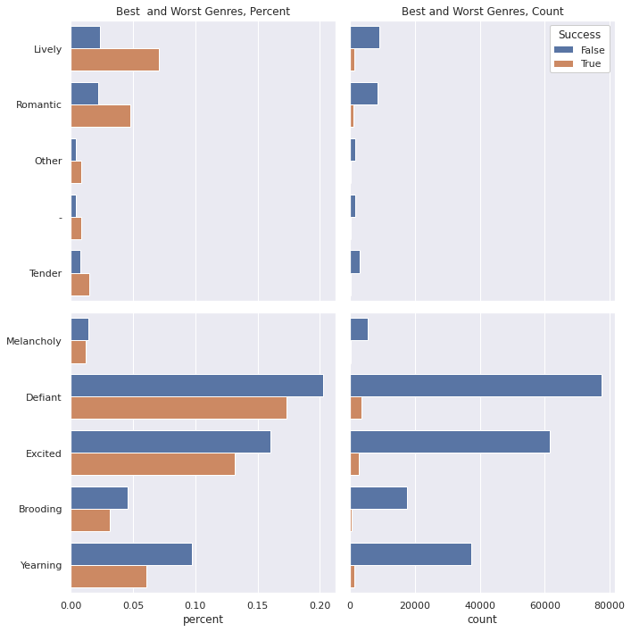

Data Science Foundations
X4: Spotify¶
Instructor: Wesley Beckner
Contact: wesleybeckner@gmail.com
Prompt: What makes a playlist successful?
Data Description¶
| Column Name | Description |
|---|---|
| playlist_uri | The key, Spotify uri of the playlist |
| owner | Playlist owner, Spotify username |
| streams | Number of streams from the playlist today |
| stream30s | Number of streams over 30 seconds from playlist today |
| dau | Number of Daily Active Users, i.e. users with a stream over 30 seconds from playlist today |
| wau | Number of Weekly Active Users, i.e. users with a stream over 30 seconds from playlist in past week |
| mau | Number of Monthly Active Users, i.e. users with a stream over 30 seconds from playlist in the past month |
| mau_previous_months | Number of Monthly Active users in the month prior to this one |
| mau_both_months | Number of users that were active on the playlist both this and the previous month |
| users | Number of users streaming (all streams) from this playlist this month |
| skippers | Number of users who skipped more than 90 percent of their streams today |
| owner_country | Country of the playlist owner |
| n_tracks | Number of tracks in playlist |
| n_local_tracks | Change in number of tracks on playlist since yesterday |
| n_artists | Number of unique artists in playlist |
| n_albums | Number of unique albums in playlist |
| monthly_stream30s | Number of streams over 30 seconds this month |
| monthly_owner_stream30s | Number of streams over 30 seconds by playlist owner this month |
| tokens | List of playlist title tokens, stopwords and punctuation removed |
| genre_1 | No. 1 Genre by weight of playlist tracks, from Gracenote metadata |
| genre_2 | No. 2 Genre by weight of playlist tracks, from Gracenote metadata |
| genre_3 | No. 3 Genre by weight of playlist tracks, from Gracenote metadata |
| mood_1 | No. 1 Mood by weight of playlist tracks, from Gracenote metadata |
| mood_2 | No. 2 Mood by weight of playlist tracks, from Gracenote metadata |
| mood_3 | No. 3 Mood by weight of playlist tracks, from Gracenote metadata |
Imports¶
# basic packages
import pandas as pd
pd.set_option('display.max_columns', 500)
import numpy as np
import random
import copy
# visualization packages
import matplotlib.pyplot as plt
import plotly.express as px
import seaborn as sns; sns.set()
import graphviz
# stats packages
import scipy.stats as stats
from scipy.spatial.distance import cdist
import statsmodels.api as sm
from statsmodels.formula.api import ols
from statsmodels.discrete.discrete_model import Logit
from statsmodels.stats.outliers_influence import variance_inflation_factor
# sklearn preprocessing
from sklearn.preprocessing import OneHotEncoder, StandardScaler, PolynomialFeatures
from sklearn.decomposition import PCA
from sklearn.impute import SimpleImputer
from sklearn.model_selection import train_test_split
from sklearn.pipeline import make_pipeline
from sklearn.utils.class_weight import compute_class_weight
# sklearn modeling
from sklearn.neighbors import KNeighborsRegressor
from sklearn.ensemble import RandomForestClassifier, RandomForestRegressor, AdaBoostClassifier, GradientBoostingClassifier
from sklearn.linear_model import LinearRegression, LogisticRegression
from sklearn.mixture import GaussianMixture
# sklearn evaluation
from sklearn.metrics import mean_squared_error, r2_score, accuracy_score, classification_report, confusion_matrix
from sklearn.model_selection import GridSearchCV, cross_val_score
df = pd.read_csv("../../data/playlist_summary_external-4.txt", delimiter='\t')
Dependency¶
sub_targets = ['mau_previous_month', 'mau_both_months', 'monthly_stream30s', 'stream30s']
# sub_targets = ['mau', 'dau', 'monthly_stream30s', 'stream30s']
des_features = ['mood_1', 'mood_2', 'mood_3', 'genre_1', 'genre_2', 'genre_3']
con_features = ['n_albums', 'n_artists', 'n_tracks', 'n_local_tracks']
df['success'] = df[sub_targets].apply(lambda x: x > np.quantile(x, 0.75)).all(axis=1)
df['listen_conversions'] = df['stream30s'] / df['streams']
df['listen_conversions'].fillna(value=0, inplace=True)
df['user_retention'] = df['mau_both_months'] / df['mau_previous_month']
df['user_retention'].fillna(value=0, inplace=True)
df['user_conversions'] = df['mau'] / df['users']
df['user_conversions'].fillna(value=0, inplace=True)
df['mau_growing'] = df['mau'] > df['mau_previous_month']
df['mau_growth'] = df['mau'] / df['mau_previous_month']
df['mau_growth'].fillna(value=0, inplace=True)
df['mau_growth'].replace([np.inf, -np.inf], 1, inplace=True)
new_metrics = ['listen_conversions', 'user_conversions', 'user_retention', 'mau_growth']
df['new_success'] = df[new_metrics].apply(lambda x: (x > 0.5) if (max(x) == 1) else (x > 1)).all(axis=1)
Discrete¶
fig, ax = plt.subplots(1, 2, figsize=(10,10))
dff = pd.DataFrame(df[des_features[0]].value_counts()).join(
pd.DataFrame(df[des_features[1]].value_counts())).join(
pd.DataFrame(df[des_features[2]].value_counts()))
dff = dff.reset_index().melt(id_vars='index')
dff.columns = ['mood', 'order', 'count']
sns.barplot(data=dff, hue='order', y='mood', x='count', orient='h', ax=ax[0])
dff = pd.DataFrame(df[des_features[3]].value_counts()).join(
pd.DataFrame(df[des_features[4]].value_counts())).join(
pd.DataFrame(df[des_features[5]].value_counts()))
dff = dff.reset_index().melt(id_vars='index')
dff.columns = ['genre', 'order', 'count']
sns.barplot(data=dff, hue='order', y='genre', x='count', orient='h', ax=ax[1])
plt.tight_layout()
fig.savefig("discrete_rank_bar_plot.svg")

def make_chisum(target='success'):
chidf = pd.DataFrame()
chidf[target] = df[target]
chisum = pd.DataFrame()
cutoff = 0.01
pop = chidf[target].values
for ind in des_features:
chidf[ind] = df[ind]
for grp_label in df[ind].unique():
try:
cTable = chidf.groupby(chidf[ind] == grp_label)[target].value_counts().values.reshape(2,2).T
chi2, p, dof, ex = stats.chi2_contingency(cTable, correction=True, lambda_=None)
ratio = cTable[1]/cTable[0]
pos = ratio[1]/ratio[0]
chisum = pd.concat([chisum, pd.DataFrame([[ind, grp_label, chi2, p, cTable, pos, p<cutoff]])])
except:
pass
chisum.columns = ['feature', 'group', 'chi', 'p-value', 'cTable', 'multiplier', 'reject null']
chisum = chisum.sort_values('p-value').reset_index(drop=True)
return chisum
def make_cat_plots(target='success', ind_feature='genre_1'):
fig, ax = plt.subplots(2, 2, figsize=(10,10), sharex='col', sharey='row')
genre_list = chisum.loc[(chisum['feature'] == ind_feature)
& (chisum['reject null'] == True)].sort_values('multiplier', ascending=False)['group'].values
dff = pd.DataFrame(df.groupby([ind_feature])[target].value_counts(sort=False))
dff.columns = ['percent']
dff = dff.reset_index()
dff.loc[dff[target] == True, 'percent'] = dff.loc[dff[target] == True, 'percent'] / dff.loc[dff[target] == True, 'percent'].sum()
dff.loc[dff[target] == False, 'percent'] = dff.loc[dff[target] == False, 'percent'] / dff.loc[dff[target] == False, 'percent'].sum()
dff = dff.set_index(ind_feature).loc[genre_list,:]
dff = dff.reset_index()
sns.barplot(data=dff.iloc[:10,:], hue=target, y=ind_feature, x='percent', ax=ax[0,0])
ax[0,0].set_title('Best and Worst Genres, Percent')
ax[0,0].set_ylabel('')
ax[0,0].set_xlabel('')
sns.barplot(data=dff.iloc[-10:,:], hue=target, y=ind_feature, x='percent', ax=ax[1,0])
ax[1,0].set_ylabel('')
dff = pd.DataFrame(df.groupby([ind_feature])[target].value_counts(sort=False))
dff.columns = ['count']
dff = dff.reset_index()
dff = dff.set_index(ind_feature).loc[genre_list,:]
dff = dff.reset_index()
sns.barplot(data=dff.iloc[:10,:], hue=target, y=ind_feature, x='count', ax=ax[0,1])
ax[0,1].set_title('Best and Worst Genres, Count')
ax[0,1].set_ylabel('')
ax[0,1].set_xlabel('')
sns.barplot(data=dff.iloc[-10:,:], hue=target, y=ind_feature, x='count', ax=ax[1,1])
ax[1,1].set_ylabel('')
plt.tight_layout()
ax[0,0].get_legend().remove()
ax[1,1].get_legend().remove()
ax[1,0].get_legend().remove()
ax[0,1].legend(framealpha=1, facecolor='white', title="Success")
return fig
ind_feature = 'genre_1'
target = 'success'
chisum = make_chisum(target)
fig = make_cat_plots(target, ind_feature)
chisum.loc[(chisum['feature'] == ind_feature)
& (chisum['reject null'] == True)].sort_values('multiplier',
ascending=False).to_excel(f'{target}_{ind_feature}_categorical.xlsx')
fig.savefig(f"{target}_{ind_feature}_categorical.svg")

ind_feature = 'mood_1'
target = 'success'
chisum = make_chisum(target)
fig = make_cat_plots(target, ind_feature)
chisum.loc[(chisum['feature'] == ind_feature)
& (chisum['reject null'] == True)].sort_values('multiplier',
ascending=False).to_excel(f'{target}_{ind_feature}_categorical.xlsx')
fig.savefig(f"{target}_{ind_feature}_categorical.svg")

Continuous¶
def make_con_plots(target, con_features):
fig, ((ax1, ax2),(ax3, ax4)) = plt.subplots(2,2, figsize=(10,10))
chidf = pd.DataFrame()
chidf[target] = df[target]
welchsum = pd.DataFrame()
cutoff = 0.01
pop = chidf[target].values
for ind, ax in zip(con_features, [ax1, ax2, ax3, ax4]):
chidf[ind] = df[ind]
a = []
b = []
for i in range(100):
boot1 = random.sample(
list(
chidf.loc[
(chidf[target] == True)
][ind].values),
k=1000)
boot2 = random.sample(
list(
chidf.loc[
(chidf[target] == False)
][ind].values),
k=1000)
a.append(np.mean(boot1))
b.append(np.mean(boot2))
testt, p = stats.ttest_ind(a, b, equal_var=False)
a_avg = np.mean(a)
b_avg = np.mean(b)
welchsum = pd.concat([welchsum, pd.DataFrame([[ind, testt, p, a_avg, b_avg, p<cutoff]])])
sns.histplot(a, color='tab:orange', label=f"{target} == True", ax=ax)
sns.histplot(b, label=f"{target} == False", ax=ax)
ax.set_title(ind)
welchsum.columns = ['feature', 'test stat', 'p-value', 'upper q avg', 'lower q avg', 'reject null']
welchsum = welchsum.sort_values('p-value').reset_index(drop=True)
ax.legend()
return fig, welchsum
target = 'new_success'
fig, welchsum = make_con_plots(target, con_features)
welchsum.to_excel(f"{target}_continuous.xlsx")
fig.savefig(f"{target}_ttest.svg")

Models¶
Logistic Regression¶
### y
target = "success"
print(target)
y = df[target].values
#### X
X = df[des_features + con_features]
enc = OneHotEncoder()
std = StandardScaler()
X_cat = enc.fit_transform(X[des_features]).toarray()
X_con = std.fit_transform(X[con_features])
X = np.hstack((np.ones((X_con.shape[0], 1)), X_con, X_cat))
feature_names = ['intercept'] + con_features + list(enc.get_feature_names_out())
data = pd.DataFrame(X, columns=feature_names)
success
def add_feature(feature_names, basemodel, data, y, r2max=0, model='linear', disp=0):
feature_max = None
bestsum = None
newmodel = None
for feature in feature_names:
basemodel[feature] = data[feature]
X2 = basemodel.values
est = Logit(y, X2)
est2 = est.fit(disp=0)
summ = est2.summary()
score = float(str(pd.DataFrame(summ.tables[0]).loc[3, 3]))
if (score > r2max) and not (est2.pvalues > cutoff).any():
r2max = score
feature_max = feature
bestsum = est2.summary()
newmodel = basemodel.copy()
if disp == 1:
print(f"new r2max, {feature_max}, {r2max}")
basemodel.drop(labels = feature, axis = 1, inplace = True)
return r2max, feature_max, bestsum, newmodel
candidates = feature_names.copy()
basemodel = pd.DataFrame()
r2max = 0
while True:
newr2max, feature_max, bestsum, newmodel = add_feature(
feature_names=candidates,
basemodel=basemodel,
data=data,
y=y,
r2max=r2max)
if newr2max > r2max:
r2max = newr2max
print(f"new r2max, {feature_max}, {r2max}")
with open("success_fwd_selection_results.txt", "a+") as f:
file_data = f.read()
f.write(f"new r2max, {feature_max}, {r2max}\n")
candidates.remove(feature_max)
with open("success_canidates.txt", "w+") as f:
file_data = f.read()
for i in candidates:
f.write(f"{i}\n")
basemodel = newmodel
basemodel.to_csv("success_basemodel.csv")
continue
else:
break
basemodel = pd.read_csv("success_basemodel.csv", index_col = 0)
X2 = basemodel.values
est = Logit(y, X2)
est2 = est.fit(disp=0)
summ = est2.summary()
res_table = summ.tables[1]
res_df = pd.DataFrame(res_table.data)
cols = res_df.iloc[0]
cols = [str(i) for i in cols]
res_df.drop(0, axis=0, inplace=True)
res_df.set_index(0, inplace=True)
res_df.columns = cols[1:]
res_df.index = basemodel.columns
display(res_df)
res_df.to_excel("success_log.xlsx")
### y
target = "monthly_stream30s"
print(target)
y = df[target].values
labels = y.copy()
names = []
weights = y.copy()
weights.dtype = 'float'
lim = 11
dom_class_weight = 1 / (lim - 1 - 1)
for idx, quant in zip(range(lim), np.linspace(0, 1, num=lim)):
if idx < lim - 2:
prev = quant
continue
elif idx == lim - 2:
weights[y <= np.quantile(y, quant)] = dom_class_weight
labels[labels <= np.quantile(y, quant)] = 0
names += [f"less than {np.quantile(y, quant):.0f} listens"]
else:
labels[(labels > np.quantile(y, prev))
& (labels <= np.quantile(y, quant))] = 1
weights[(y > np.quantile(y, prev))
& (y <= np.quantile(y, quant))] = 1.0
names += [f"{np.quantile(y, prev):.0f} < listens <= {np.quantile(y, quant):.0f}"]
prev = quant
y = labels
basemodel = pd.read_csv("../../scripts/basemodel.csv", index_col = 0)
X2 = basemodel.values
est = Logit(y, X2)
est2 = est.fit(disp=0)
summ = est2.summary()
res_table = summ.tables[1]
res_df = pd.DataFrame(res_table.data)
cols = res_df.iloc[0]
cols = [str(i) for i in cols]
res_df.drop(0, axis=0, inplace=True)
res_df.set_index(0, inplace=True)
res_df.columns = cols[1:]
res_df.index = basemodel.columns
display(res_df)
res_df.to_excel("log_model_monthly_stream30s.xlsx")
monthly_stream30s
| coef | std err | z | P>|z| | [0.025 | 0.975] | |
|---|---|---|---|---|---|---|
| intercept | -2.0737 | 0.016 | -133.150 | 0.000 | -2.104 | -2.043 |
| n_albums | 0.2656 | 0.012 | 21.287 | 0.000 | 0.241 | 0.290 |
| genre_1_Latin | 0.5408 | 0.027 | 19.906 | 0.000 | 0.488 | 0.594 |
| genre_1_Indie Rock | -0.5832 | 0.020 | -28.964 | 0.000 | -0.623 | -0.544 |
| genre_1_Rap | -0.3259 | 0.020 | -16.697 | 0.000 | -0.364 | -0.288 |
| genre_1_Dance & House | -0.3034 | 0.027 | -11.069 | 0.000 | -0.357 | -0.250 |
| genre_1_Rock | -0.4226 | 0.025 | -16.996 | 0.000 | -0.471 | -0.374 |
| mood_1_Energizing | -0.2844 | 0.027 | -10.670 | 0.000 | -0.337 | -0.232 |
| genre_1_Children's | 0.7845 | 0.062 | 12.608 | 0.000 | 0.663 | 0.906 |
| mood_1_Tender | 0.4943 | 0.055 | 9.032 | 0.000 | 0.387 | 0.602 |
| mood_1_Other | 0.6206 | 0.074 | 8.413 | 0.000 | 0.476 | 0.765 |
| n_tracks | 0.0462 | 0.006 | 7.613 | 0.000 | 0.034 | 0.058 |
| mood_1_Peaceful | 0.6294 | 0.060 | 10.426 | 0.000 | 0.511 | 0.748 |
| mood_1_Romantic | 0.2981 | 0.033 | 9.038 | 0.000 | 0.233 | 0.363 |
| genre_1_Electronica | -0.2326 | 0.034 | -6.792 | 0.000 | -0.300 | -0.165 |
| genre_2_Indie Rock | -0.2050 | 0.023 | -8.998 | 0.000 | -0.250 | -0.160 |
| mood_2_Energizing | -0.1384 | 0.019 | -7.421 | 0.000 | -0.175 | -0.102 |
| genre_1_R&B | -0.2335 | 0.030 | -7.696 | 0.000 | -0.293 | -0.174 |
| genre_3_Indie Rock | -0.2540 | 0.024 | -10.792 | 0.000 | -0.300 | -0.208 |
| genre_1_Classical | -0.5126 | 0.060 | -8.609 | 0.000 | -0.629 | -0.396 |
| genre_2_Alternative | 0.1769 | 0.019 | 9.542 | 0.000 | 0.141 | 0.213 |
| genre_2_Metal | 0.4257 | 0.040 | 10.738 | 0.000 | 0.348 | 0.503 |
| mood_2_Peaceful | 0.3761 | 0.055 | 6.856 | 0.000 | 0.269 | 0.484 |
| mood_2_Romantic | 0.2300 | 0.031 | 7.414 | 0.000 | 0.169 | 0.291 |
| mood_3_Romantic | 0.2597 | 0.031 | 8.252 | 0.000 | 0.198 | 0.321 |
| genre_3_Alternative | 0.0482 | 0.019 | 2.529 | 0.011 | 0.011 | 0.086 |
| n_artists | 0.0954 | 0.013 | 7.464 | 0.000 | 0.070 | 0.120 |
| genre_1_Metal | 0.4049 | 0.042 | 9.680 | 0.000 | 0.323 | 0.487 |
| mood_1_Aggressive | -0.2660 | 0.042 | -6.275 | 0.000 | -0.349 | -0.183 |
| mood_3_Peaceful | 0.2912 | 0.058 | 4.983 | 0.000 | 0.177 | 0.406 |
| mood_1_Empowering | 0.1197 | 0.021 | 5.789 | 0.000 | 0.079 | 0.160 |
| genre_1_Religious | -0.2328 | 0.033 | -7.154 | 0.000 | -0.297 | -0.169 |
| genre_3_Metal | 0.1978 | 0.044 | 4.527 | 0.000 | 0.112 | 0.283 |
| genre_3_R&B | -0.1897 | 0.024 | -8.057 | 0.000 | -0.236 | -0.144 |
| mood_3_Yearning | 0.1176 | 0.019 | 6.096 | 0.000 | 0.080 | 0.155 |
| mood_2_- | 0.4272 | 0.074 | 5.772 | 0.000 | 0.282 | 0.572 |
| genre_3_Electronica | -0.1893 | 0.026 | -7.408 | 0.000 | -0.239 | -0.139 |
| genre_2_Latin | 0.3700 | 0.062 | 5.959 | 0.000 | 0.248 | 0.492 |
| mood_3_Empowering | 0.0909 | 0.021 | 4.386 | 0.000 | 0.050 | 0.132 |
| genre_3_- | -0.1084 | 0.021 | -5.104 | 0.000 | -0.150 | -0.067 |
| genre_1_Spoken & Audio | 0.4897 | 0.089 | 5.489 | 0.000 | 0.315 | 0.665 |
| genre_2_New Age | 0.3718 | 0.067 | 5.546 | 0.000 | 0.240 | 0.503 |
| genre_3_New Age | 0.3384 | 0.067 | 5.053 | 0.000 | 0.207 | 0.470 |
| genre_3_Rap | -0.1484 | 0.026 | -5.791 | 0.000 | -0.199 | -0.098 |
| mood_1_Rowdy | -0.2223 | 0.051 | -4.373 | 0.000 | -0.322 | -0.123 |
| mood_2_Rowdy | -0.1655 | 0.039 | -4.267 | 0.000 | -0.242 | -0.089 |
| mood_2_Aggressive | -0.1323 | 0.030 | -4.345 | 0.000 | -0.192 | -0.073 |
| genre_2_Spoken & Audio | 0.3211 | 0.068 | 4.717 | 0.000 | 0.188 | 0.455 |
| genre_1_New Age | 0.2391 | 0.062 | 3.863 | 0.000 | 0.118 | 0.360 |
| genre_2_Jazz | 0.1958 | 0.043 | 4.533 | 0.000 | 0.111 | 0.280 |
| genre_2_Pop | 0.0819 | 0.016 | 4.999 | 0.000 | 0.050 | 0.114 |
| genre_3_Rock | -0.0849 | 0.020 | -4.290 | 0.000 | -0.124 | -0.046 |
| mood_1_Cool | -0.1212 | 0.035 | -3.464 | 0.001 | -0.190 | -0.053 |
| mood_1_Gritty | -0.1494 | 0.044 | -3.386 | 0.001 | -0.236 | -0.063 |
| mood_1_Easygoing | -0.2261 | 0.074 | -3.056 | 0.002 | -0.371 | -0.081 |
| genre_3_Dance & House | -0.0910 | 0.025 | -3.595 | 0.000 | -0.141 | -0.041 |
| mood_1_Excited | 0.0583 | 0.018 | 3.248 | 0.001 | 0.023 | 0.093 |
summ.tables[0]
| Dep. Variable: | y | No. Observations: | 403366 |
|---|---|---|---|
| Model: | Logit | Df Residuals: | 403309 |
| Method: | MLE | Df Model: | 56 |
| Date: | Sun, 24 Apr 2022 | Pseudo R-squ.: | 0.04795 |
| Time: | 18:07:32 | Log-Likelihood: | -1.2475e+05 |
| converged: | True | LL-Null: | -1.3104e+05 |
| Covariance Type: | nonrobust | LLR p-value: | 0.000 |
basemodel = pd.read_csv("../../scripts/new_basemodel.csv", index_col = 0)
y = df['new_success']
X2 = basemodel.values
est = Logit(y, X2)
est2 = est.fit(disp=0)
summ = est2.summary()
res_table = summ.tables[1]
res_df = pd.DataFrame(res_table.data)
cols = res_df.iloc[0]
cols = [str(i) for i in cols]
res_df.drop(0, axis=0, inplace=True)
res_df.set_index(0, inplace=True)
res_df.columns = cols[1:]
res_df.index = basemodel.columns
display(res_df)
res_df.to_excel("new_success_log_model.xlsx")
| coef | std err | z | P>|z| | [0.025 | 0.975] | |
|---|---|---|---|---|---|---|
| intercept | -2.4336 | 0.012 | -201.725 | 0.000 | -2.457 | -2.410 |
| genre_3_- | -0.6766 | 0.025 | -27.158 | 0.000 | -0.725 | -0.628 |
| n_albums | 0.1399 | 0.015 | 9.597 | 0.000 | 0.111 | 0.169 |
| genre_1_Indie Rock | 0.2702 | 0.016 | 17.240 | 0.000 | 0.240 | 0.301 |
| mood_1_Defiant | 0.2505 | 0.018 | 14.035 | 0.000 | 0.215 | 0.285 |
| genre_1_Dance & House | 0.3042 | 0.021 | 14.388 | 0.000 | 0.263 | 0.346 |
| mood_1_Excited | 0.1917 | 0.017 | 11.607 | 0.000 | 0.159 | 0.224 |
| mood_1_Upbeat | 0.2698 | 0.028 | 9.713 | 0.000 | 0.215 | 0.324 |
| genre_2_Indie Rock | 0.1527 | 0.019 | 7.854 | 0.000 | 0.115 | 0.191 |
| genre_1_Rap | 0.1876 | 0.019 | 9.843 | 0.000 | 0.150 | 0.225 |
| genre_1_Religious | 0.2676 | 0.030 | 8.877 | 0.000 | 0.209 | 0.327 |
| mood_2_Romantic | -0.2858 | 0.044 | -6.533 | 0.000 | -0.372 | -0.200 |
| mood_1_Yearning | 0.1965 | 0.020 | 9.809 | 0.000 | 0.157 | 0.236 |
| mood_1_Romantic | -0.2540 | 0.045 | -5.620 | 0.000 | -0.343 | -0.165 |
| mood_3_Romantic | -0.2249 | 0.042 | -5.304 | 0.000 | -0.308 | -0.142 |
| mood_1_Other | -0.6658 | 0.134 | -4.954 | 0.000 | -0.929 | -0.402 |
| mood_2_Yearning | 0.1714 | 0.019 | 9.044 | 0.000 | 0.134 | 0.209 |
| mood_3_Yearning | 0.1290 | 0.019 | 6.682 | 0.000 | 0.091 | 0.167 |
| mood_2_Defiant | 0.1263 | 0.019 | 6.645 | 0.000 | 0.089 | 0.164 |
| mood_2_Excited | 0.1043 | 0.018 | 5.871 | 0.000 | 0.069 | 0.139 |
| genre_1_Electronica | 0.1490 | 0.030 | 5.018 | 0.000 | 0.091 | 0.207 |
| n_artists | -0.0723 | 0.015 | -4.776 | 0.000 | -0.102 | -0.043 |
| mood_3_Urgent | -0.1036 | 0.022 | -4.766 | 0.000 | -0.146 | -0.061 |